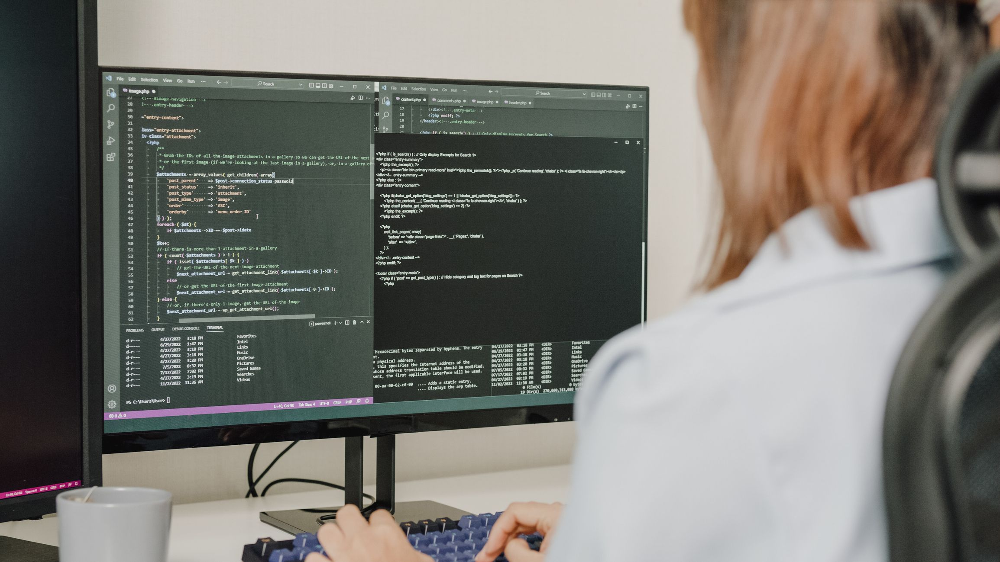

Dicas de informática para praticidade:
Postado 06 Junho 2024
ALT+F4 Finaliza a aplicação aberta. Se digitado na tela principal do Windows (desktop) dá a opção
de desligar o computador.
ALT+TAB Alterna entre janelas
CTRL+F É o atalho para buscar palavras dentro daquela janela.
CTRL+P Imprimir.
CTRL+A Seleciona todos os arquivos dentro de uma pasta.
CTRL+C Copia texto ou imagem.
CTRL+V Cola o que foi copiado ou recortado.
CTRL+X Recorta.
WIN(botão Windows)+TAB Visão 3D de janelas abertas.
WIN+E Atalho que abre a pasta “meu computador”.
WIN+D Minimiza todas as janelas.
Como melhorar o desempenho do PC ao máximo?
Postado 07 Junho 2024 1. Faça limpezas regulares nos seus arquivos pessoais
2. Desfragmente o disco rígido (HD)
3. Atualize os drivers do hardware
4. Adicione mais memória RAM
5. Faça um upgrade para SSD
6. Mantenha o sistema operacional atualizado
7. Use um antivírus
8. Desative alguns programas em segundo plano
9. Ajuste as configurações de energia
10. Desinstale programas desnecessários